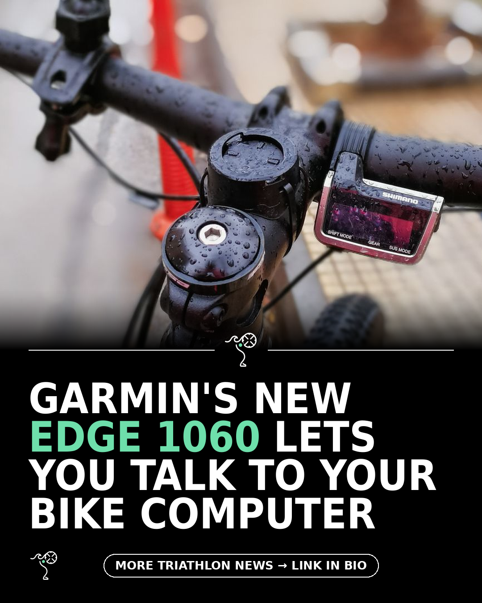

Triathlon News Daily
Monday, 26 October 2026 · generated automatically

Today's stories
- Garmin Edge 1060 adds voice control to its flagship cycling computer220 Triathlon
- Can the Wim Hof Method actually make you a better open-water swimmer?220 Triathlon
- Cork-soled recovery shoes tested after long training daysBlog - A Triathlete's Diary